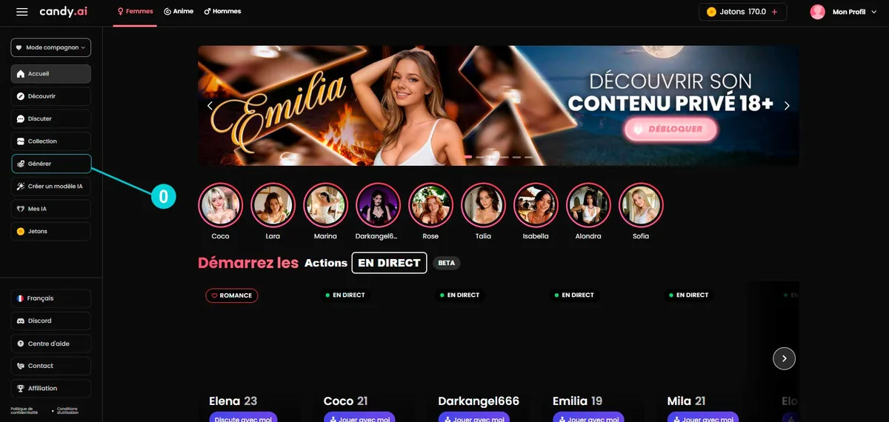
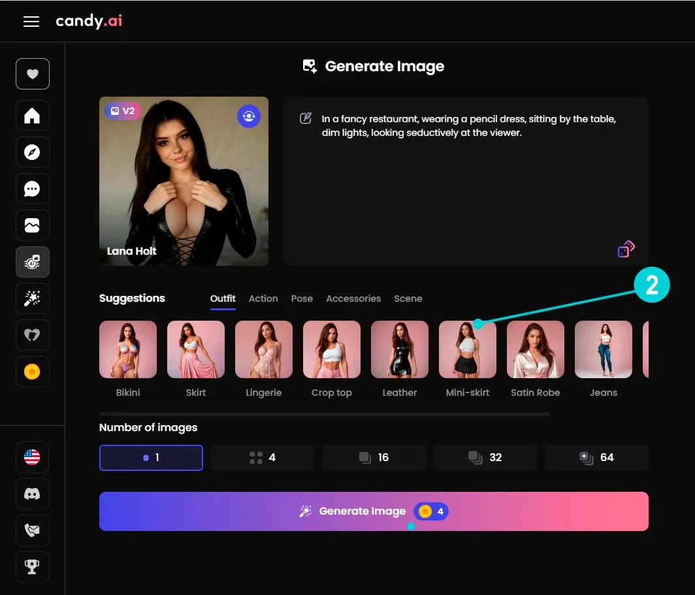

Candy AI 从零上手：搭角色、聊对话、出图出视频，一篇通
这篇教程带你从注册到完整跑通一次角色创建→多模态输出的全流程，顺便讲清代币怎么花不浪费、预设风格怎么搭不翻车。
这篇教程读完，你能从零在 Candy AI 上搭出一个专属虚拟角色、跟它聊到性格成型、再用内置的图像和视频引擎把它"拍出来"。全程不玩虚的——该点哪个按钮、哪一步容易踩坑、代币花在哪最值，都实打实说。
准备：先搞清楚几个边界
Candy AI 的官网是网页应用，桌面和移动端浏览器直接访问就行，不用装；需要客户端的去下载。第一次打开不用急着付费——免费版的文字聊天、预设角色浏览、角色创建这些基础功能全开放，代币只在图像、视频、语音、Live Action 这些高级功能上消耗。
几个先验认知能省不少钱：
- 高级版每月送 100 代币，只在当前订阅周期有效，下月重置不累积。单独买的代币包有效期长些，但单价更贵，偶尔用的话每月那 100 个够用。Candy AI文档里有各功能代币消耗的完整清单，按需查阅。
- 图像生成 V1 花 2 代币一张，V2 花 4 代币一张但画质明显更好，建议默认 V2。
- 视频生成 5 秒 12 代币、10 秒 20 代币——后者每代币能换更长时长，性价比更高。
- 实时语音通话 20~30 代币每分钟，AI 语音回复 2~5 代币一条，省代币就选后者。

第一步：创建你的第一个角色
打开角色创建器，先选性别模板——这决定了后续外貌参数的默认值方向，但所有项都能单独改，不用纠结。
接下来是 47 项自定义参数，分三块：外貌、性格、背景。外貌从肤色、瞳色、发型到体型身高，每一项都有滑块或选项；性格部分先挑 2~3 个兼容的原型（"温柔"和"高冷"不能同时选，系统会提示冲突），再用特质滑块微调——比如"外向"拉到 60 而不是 100，出来的角色就不会话太多；背景故事写一两百字就够，AI 会在对话里自然引用。
一个实用技巧：上传一张参考图当视觉锚点。不用多精致，哪怕是一张从网上找的、你觉得气质接近的图就行——AI 会把面部特征锁定在这个方向，后面不管生成多少张图，角色都长得一致，不会每张脸都变。
声音风格也是这时选的。预设里有十来种声线可以试听，挑一个不违和的就行——后面在聊天里也能改。
全部调好后点生成，AI 会先出一张初始图，这就是你的角色了。
第二步：聊天把角色"磨活"
刚创建的角色像一张白纸——外貌参数定了，但说话语气、习惯用词、对你的态度都还是随机的。这一步靠多轮对话把它"养"出性格。
别上来就问"你是谁"，太干。从具体场景切入效果好："我今天加班到九点才回家，累得不想说话"、"刚才路过花店，看见一束很特别的花"——给它一个具体的情绪或场景钩子，AI 会沿着这个方向展开回应。
聊个十来轮你会发现两个变化：一是语气稳定了——比如你说累，它是先关心你身体还是先吐槽老板，取决于你之前引导的方向；二是它开始记住细节——比如你提过一次喜欢喝冷萃咖啡，过几天聊到饮料它会主动提。这个记忆是向量数据库长期存储的，不是窗口内截断，聊得越久越像真认识。
记忆系统是免费功能，不花代币，尽情聊。
第三步：让角色"看见"——图像生成
聊到觉得性格差不多了，让 AI 给角色出一张图——这就是代币开始出场的地方。
进入图像生成器，引擎选 V2（画质提升明显，多花 2 代币值得）。左边是预设风格区，五个分类：服装、动作、姿态、配件、场景。这里最容易翻车——要么全选要么乱搭，出来的画面要么太单一要么风格打架。
推荐这么搭：服装 + 场景先定大方向（比如"连衣裙" + "樱花树下"），再加一个动作细节（"站立" + "微微侧身"），最后补一两个小配件（"发带" + "眼镜"）。五个分类各挑 1~2 项，总数控制在 5~7 个，出来的画面既有细节又不杂乱。

预设选好后，在右侧提示词区加一两句微调描述——"电影感光线"、"柔和的逆光"、"浅景深"这种摄影术语就行，不用写很长。生成一张 V2 图花 4 代币，等 20 秒左右出结果。
如果对结果不满意，别重开角色——直接改预设或提示词再生成一张就行。Candy AI 的角色锁定机制会保持面部结构一致，换风格换场景，脸不会变。
第四步：从图片到视频，一键动画化
对生成的图满意了，点"创建 AI 视频"——这是 Lumina-Realism V4 引擎的活儿，4K 画质、最长 10 秒。5 秒版本 12 代币、10 秒版本 20 代币，后者每代币性价比更高，选 10 秒的。
视频生成大概 30 秒。引擎会基于你刚才那张图的面部结构锁定角色，然后让它做一个自然的小动作——眨眼、转头、轻微晃动，比静态图生动得多。这个功能在同类产品里很少有对标的，也是很多人升级高级版的直接原因。
三个新手最容易踩的坑
代币花在 V1 引擎上。V1 确实省 2 代币，但画质差距肉眼可见，尤其是人脸细节和光线处理。4 代币一张 V2 图是这个平台最物有所值的消费。
预设风格全选或乱搭。五个分类每个都挑好几项，出来的画面元素堆砌，AI 会优先满足最后选的那些，前面的反而丢掉。五个分类各 1~2 项是经验值。
期望一次出图完美。AI 生成图本质是概率过程，同一张提示词出十张结果可能都不一样。出图不满意时微调提示词里的一两个词（比如把"明亮"改成"柔光"），比完全重写有效。
进阶往哪玩
跑通这个基础流程后，可以试试两个方向：一是角色创建器里往更深的参数去挖——性格特质滑块的微调、背景故事写得更有张力、Live Action 付费动作（1~5 代币一次，让角色做特定动作）；二是把图像和视频生成跟多轮对话结合——比如让角色在某个场景下"摆个姿势"，生成图之后继续聊、再生成不同场景的图，用角色锁定机制保持视觉连贯性，累积出一组有叙事感的角色图集。
想深入了解代币消耗明细、预设风格的完整选项、或者 47 项参数每一项具体影响什么，去翻它的官方文档就行。上手之后你会发现，Candy AI 的门槛其实低——创建角色、聊天、出图，每一步都是直接点，真正需要花心思的地方反而是怎么把这些功能组合出自己想要的效果。
这套资料在 Candy AI 的官方网站能找到最完整的产品说明，国内访问偶尔慢的话也可以去镜像仓库拉。喜欢把资料同步到本地的，我顺手传了一份到三个 Git 仓库，分别放在 下载官网/Candy AI 目录下——GitHub、Gitee、GitCode 都有，选你顺手的就行。